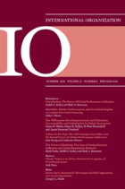
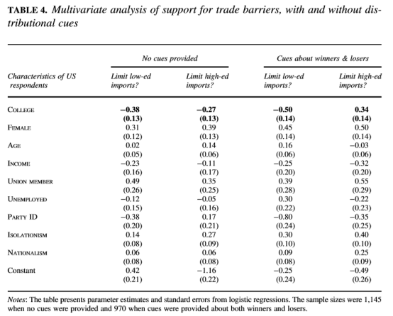

收录于合集
作品简介
【作者】 Sungmin Rho ，日内瓦高级国际关系学院政治学与国际关系助理教授，研究兴趣为国际政治经济学、比较政治经济学、中国政治、移民研究、全球化、公共舆论、调查与田野实验。
Michael Tomz ，斯坦福大学政治学教授，经济政策研究所(SIEPR)高级研究员，研究兴趣为国际关系、国际政治经济学、公共舆论以及方法论。
【编译】 王川 （国政学人编译员，吉林大学公共外交学院）
【校对】 李玉婷
【审核】 周雨橙 兰星辰
【排版】 马璐
【来源】 Rho, S., & Tomz, M. (2017). Why Don’t Trade Preferences Reflect Economic Self-Interest? International Organization, 71(S1), S85-S108.
期刊介绍

International Organization（《国际组织》），简称“IO”，是一份经过同行评议的季刊，涵盖国际事务的领域包括：外交政策、国际关系、国际与比较政治经济学、安全政策、环境争端与解决、欧洲一体化、联盟模式与战争、谈判与冲突解决、经济发展与调整、国际资本流动等。它成立于1947年，由剑桥大学出版社代表国际组织基金会出版，主编是乔治城大学的Erik Voeten。根据Journal Citation Reports显示，2018年IO杂志影响因子为4.508，在91个国际关系类期刊中排名第一，在176个政治科学类期刊中排名第一。
为什么贸易政策偏好不能反映自身的经济利益？
Why Don’t Trade Preferences Reflect Economi Self-Interest?
内容提要 大多数国际政治经济学的研究都是基于个人和团体的政策偏好能反映其经济利益这一假设，而近期却有研究对此提出质疑，认为选民对贸易政策的选择无关自己的利益偏好。本文认为（选民）对于经济的无知是造成这一现象的可能原因，大多数选民并不理解贸易保护主义的后果。通过实验，本文探究了当选民掌握了更多有关贸易壁垒如何影响收入分配的信息后，他们会如何反应。本文发现，人们对分配因素的考虑会有两种相反的效果：它既会使人们更倾向于表达利己的政策偏好，也会让人们对于他人的利益更敏感。在本文的研究中，这两种反应都是很明显的，但是利己的反应比利他的反应更多。因此，如果人们了解贸易对于收入分配的影响，个人的利益和政策偏好之间的关联会更为紧密。通过说明经济自利的解释力是如何取决于因果关系的信念的，本文为更适用于现实的国际政治经济学理论的产生奠定了基础。 文章导读
在过去的二十年中，开放经济政治学（OEP）成为国际政治经济学的主流范式，遵循这一范式的学者运用经济学理论分析一国国内个人或群体的政策偏好，然后探究如何通过政治制度和国际谈判将这些偏好转化为实际政策。 开放经济政治学的前提假设是个人和群体的政策偏好能反映他们自身的经济利益。 随着开放经济学逐渐成为主流，学者们开始对这一范式的前提，即个人具有经济利己性的政策偏好这一基本假设进行评估。 大量的微观层次的研究关注贸易层面的问题，学者们利用民意测验的方式，探究被测试者能否如预期一样，根据自己对经济的理解和在国际竞争中的参与，形成对贸易的理解。早前的研究认为贸易偏好确实能够反映自身的经济利益，但是近期更多的研究却对这一观点进行质疑，他们认为对于贸易的态度更多是取决于象征性的和社会层面的考虑，而不是其自身的物质利益。
开放经济学的核心观点是个体的利益在很大程度上是由个体的生产情况或者在国际劳动分工中的地位决定的，这一核心观点深受近期研究的冲击，而对这一核心观点的改变势必会破坏开放经济学这一范式。因此，在对这一范式进行修正之前，需要对物质利益和政策偏好之间的“脱节”进行研究。因此， 本文的研究问题是为什么自身利益不能在形成政策偏好的过程中发挥更大的作用？ 自身利益与政策偏好之间的关系是否在某些特定背景下表现得更为显著？
本文仍假设经济利益和政策偏好之间的联系是由因果信念 ( casual beliefs ) 决定的，尤其是关于政府政策如何影响个人和群体对物质利益的认识。 大部分的选民并不理解贸易保护主义的后果。本文通过实验探究当选民了解更多的关于贸易政策的获利者与受损者的信息后，将会作何反应。
分配性因素会产生两种不同的影响。通过阐述政策如何影响被测试者自身，分配性因素会给予人们他们需要的信息来界定利己的政策。同时，分配性因素也会阐述政策如何影响他人，使人们能够选择利他性的政策。因此， 关于政策受益者和损失者的信息会促进利己主义和利他主义的产生。 在该研究中，利己主义和利他主义的都是明显的，但是利己主义的反映多于利他主义的反映。因此，如果人们对贸易的分配性影响有更多的认识，个人利益和政策偏好的关联也会更加紧密。
本文的实验不仅展示了因果信念如何影响政策偏好，也解释了个体之间的异质性。 拥有大学学历的被测试者利用分配性影响因素来促进自己目标的达成，而未拥有大学学历的被测试者利用这一因素来促进利己和利他的目标的实现。 ****
一、自我利益和经济忽略的潜在影响
斯托尔珀- 萨缪尔森定理认为自由贸易利于相对丰富的生产要素的拥有者，但是会损害相对稀缺生产要素的拥有者。在发达经济体中，受过高等教育的劳动力相对丰富，他们更倾向于自由贸易，但是受教程度低的劳动力会反对自由贸易。在发展中国家中，受教育的劳动力相对稀缺，情况便与前者相反。
Anna Mayda和Dani Rodrik通过民众意见测试得出结论，即贸易偏好与个人的资本层次紧密相关，符合斯托尔珀- 萨缪尔森定理。即使这种被视为经典的研究近期也开始遭受质疑， 越来越多的研究认为个人的物质利益和贸易政策偏好之间的关联比之前想象得弱。 一些学者发现再控制其它公众意见的预测变量后，物质利益这一变量的解释力变得微乎其微。另一些学者承认某些变量与对贸易的态度之间存在密切的关联性，例如教育。但是仍认为这种联系不能反映其自身的物质利益。这些研究提出了一个更为深刻的问题：为什么物质利益的预测能力极低？有如下几种可能性：(1)个人的偏好是由非物质考量决定的；（2）人们会衡量物质利益，但是会更多地关注社会整体，较少地关注个人的境况。在此，作者针对物质利益与贸易偏好之间的弱联系提出了第三种解释，即普通公民并不理解贸易是如何影响他们的物质利益的，因此，他们很难选择能够最大化自身利益的政策。
基于现有的研究，本文做出假设，即 经济知识对公民是否会表达出利己的偏好具强有力的影响力。 作为基准， 需要考虑公众在缺乏关于贸易分配影响的信息时会如何看待贸易。 在这种情况下，公众没有足够的认知去判断哪个政策是最利己的，导致物质利益和政策偏好之间的关联较弱。
在公众了解了有关贸易的分配影响后，他们将会怎样改变自己的观点？ 本文假设上述情况会产生两种截然不同的影响：一方面，这类信息会增强个人的物质利益与其政策偏好之间的关联，人们能够更准确地界定和推进有利于他们利益的政策；另一方面，在人们得知有关贸易盈利者和受损者的信息后，会产生利他主义的倾向。这一反应则削弱自身利益与政策偏好之间的关联。
二、关于贸易政策影响的认知
为了解释为什么贸易观念不能反映经济利益诉求，我们需要衡量公众对贸易的分配性影响的了解程度。 本项研究中测试的是对于斯托尔珀 -萨缪尔森定理核心假设的了解度。 根据萨缪尔森定理，政府限制国外低学历劳动者生产的产品对低学历的美国劳动者有利，高学历的劳动者有弊；反之也成立。
该研究之所以会关注学历这一变量是出于三个原因： 第一，关注学历是为了使该研究尽可能区别于之前的研究；第二，关注学历能够使该研究更容易被被测试者理解和接受；第三，被测试者的学历相较于技能等变量来说更容易测量。
该研究将会测试美国人是否能够预料到表1所呈现的经济影响。 首先，该研究会注明， “一部分人认为美国政府应该限制进口那些雇用较少的高学历劳动者的外企的产品”。 其次，该研究会询问上述政策会怎样影响高学历和低学历的美国人。然后，该研究会询问如果美国政府限制进口那些雇用较多的高学历劳动者的外企的产品会产生什么影响。 研究者将问卷分两批发放给1495名美国成年人，这些被测试者都是通过亚马逊劳务众包平台（Amazon Mechanical Turk）招募的，这一平台被广泛应用于学术研究，并且通过这一平台得出的结果有较强的代表性。
该实验得出的结论是被测试者的想法不符合斯托尔珀- 萨缪尔森定理。当被问及限制进口国外低学历劳动者生产的产品对美国国内低学历和高学历的劳动者有何影响时，只有28%的被测试者认为该政策有利于美国国内的低学历劳动者，只有16%的被测试者感觉上述政策会损害美国高学历劳动者的利益。其余的被测试者不知道上述政策有什么影响，或者做出与斯托尔珀- 萨缪尔森定理相反的预测。当被问及限制进口国外高学历劳动者生产的产品对美国国内劳动者有何影响时，被测试者的回答也大大偏离了斯托尔珀- 萨缪尔森定理。只有20%的人认为这种保护主义的政策会损害美国国内低学历劳动者的利益，28%的人认为其有利于美国国内高学历劳动者。总的来说， 以上的数据揭示了美国普通民众的想法和斯托尔珀 -萨缪尔森定理的预测之间存在巨大的差距。
当然，某些公民可能会比其他人更了解贸易的影响。Hainmueller和Hiscox主张高学历的人由于能够接触到比较优势等经济学观念，可能会具有信息上的优势。因此 ，研究进一步将被测试者分为高学历和低学历的两组进行实验。 结果发现，虽然高学历被测试者的观念与低学历被测试者相比更符合斯托尔珀 -萨缪尔森定理，但是两组被测试者观念之间的差距非常小，这种差距可以认为是由实验误差产生的。
总之， 普通的美国民众对贸易的经济影响了解甚少。 大部分人不熟悉贸易的经典案例，了解关于分配性影响著作的人更是少之又少。不了解贸易的分配性影响的民众，可能没有能力界定和选择利己的政策。同时，该研究表明，即使是社会整体呈现出经济无知的状态，如果民众被告知有关贸易获益者和受损者的相关信息后，他们的观念也会发生重大的改变。
**
**
三、实验设计
**在对贸易了解 更多的情况下，民众会对贸易政策作何反应？**为了回答这一问题， 该研究设计了一个调查实验，在这个实验中一部分被测试者获得有关贸易保护主义的分配性影响的信息，而另一部分没有获得此类信息。 每个被测试者都会阅读一段导入语：“美国的企业和消费者会购买很多产自国外的产品，这一类产品被称为进口产品。关于美国政府是否应该使用法律来限制产品进口存在很大的争议。”
然后被测试者被分为四组。 第一组接收到了关于贸易盈利者和受损者的信息。 他们被告知限制进口国外低学历劳动者生产的产品有利于美国低学历劳动者，这种政策可以保护国内低学历劳动者免受国外劳动者的竞争，进而增加他们的工资收入。但是这种政策会损害美国国内高学历的劳动者，因为它会提高高学历劳动者购买低级产品的价格，却没有增加他们的工资收入。之后，研究者询问他们政府是否应该限制进口国外低学历劳动者生产的产品。与此同时，第一组被测试者还被告知，如果政府限制进口国外高学历劳动者生产的产品，对国内低学历和高学历的劳动者所产生的不同影响。同样，在此之后，研究者询问了他们政府是否应该限制进口国外高学历劳动者生产的产品。
第二组被测试者仅接收到关于贸易获利者的信息。 他们只被告知了限制进口国外低学历与高学历劳动者生产的产品的受益者。
第三组测试者仅接收到关于贸易受损者的信息，而第四组测试者则未被告知任何信息， 第四组被测试者是一个基准，他们的回答提供了人们如何以固有认知理解贸易政策的信息。本次研究的被测试者同样通过亚马逊劳务众包平台招募得到。
四、分配性信息对于高学历人群的影响
如果高学历人群能够按照斯托尔珀- 萨缪尔森定理界定自身的利益，他们会限制进口高学历生产者生产的产品，但允许进口低学历生产者生产的产品。然而，在未收到相关信息的情况下，他们的反应并未达到上述预期。低于三分之一的人想限制进口高学历生产者生产的产品，但是过半数的人倾向限制进口低学历生产者生产的产品。这种情况与斯托尔珀- 萨缪尔森定理中最大化个人收益的模式是相反的。
当研究者告知被测试者关于贸易获利者和受损者的信息后，相较于未得知分配性信息的控制组，他们呈现出明显的利己倾向。想要限制进口高学历劳动者生产的产品的比例增长了9.5%，想要限制进口低学历劳动者生产的产品的比例增长了8.7%，两者的影响都是非常大的。
这种模式并不是能够被预知的。按照之前的假设，信息会引起利己和利他两种不同的反应。而在以高学历劳动者为样本的研究中，利己的倾向明显高于利他的倾向。为了对这一结果进行验证，该研究对高学历劳动者在接受片面的信息（仅关于贸易获利者或受损者的信息）后的反应进行了分析。
结果发现高学历劳动者几乎全部将这种信息用于利己的目的。 图1的上半部分显示，在没有获得相关信息时，仅有32.6%的高学历劳动者想限制进口国外高学历生产者生产的产品，而当得知上述限制进口的政策会产生利己的影响（但不知道损害低学历者的利益）时，对于这种限制政策的支撑上升到46.5%。而当高学历劳动者得知该限制政策会损害低学历劳动者的利益时，仅有2.8%的人放弃了对该限制政策的支持，这一变化是极小的，甚至可以被视为是由误差引起的。表1的下半部分则是高学历劳动者针对限制进口低学历生产者生产的产品这一政策的反应变化，结果同样呈现出了极大的利己倾向。实验表明， 高学历的劳动者对于影响自身的政策的反应是强烈的，但是对于影响他人的政策的反应却是微小的，这也解释了在告知被测试者关于贸易获利者和受损者的信息时，整体的政策偏好变得趋于利己的原因。
如果高学历劳动者更了解贸易的分配性影响，他们的经济利益和政策偏好之间的关联就会更加紧密。 然而，该研究结果也显示了，给予高学历劳动者关于贸易获利者和受损者的信息并没有使得他们变为极端的利己主义者，仍然有很多人没有选择利己的贸易政策。因此， 经济无知可以部分解释贸易偏好与个人利益之间存在分离性的原因，但不能解释其全部。
五、分配性信息对低学历人群的影响
低学历人群会对分配性信息做出怎样的反应？ 根据表2的数据，即使在没有接收到分配性信息的情况下，低学历劳动者也会通过不均衡的限制进口国外低学历劳动者生产的产品来维护自身的利益。在此背景下，提供关于贸易分配的信息引起了利他的反应。当研究者向被测试者解释了限制进口低学历生产者生产的产品的政策对不同的群体所产生的影响后，对于该限制性政策的支持率下降了6.9%。这是因为这种信息激发了一种非对称性的反应，被测试者在得知这种贸易保护政策会损害高学历劳动者的利益后减弱了其贸易保护主义的倾向，但是当被测试者得知这种政策会对自己产生有利的影响后并没有增强其贸易保护主义的倾向。当低学历生产者被告知限制国外高学历生产者生产的产品进口的获利者和受损者时，由于利己与利他两种倾向的对冲，总体的态度基本没有发生改变。当低学历劳动者被告知限制进口国外高学历生产者生产的产品对国内高学历劳动者的益处后，对该种贸易限制政策的支持率增长了近11%，而当低学历劳动者被告知该政策对自身的不利影响时，对该政策的支持率仅下降了8.3%。
总的来说， 分配性信息既会促进利己主义倾向也会促进利他主义倾向，但是具体的影响要视被测试群体而定。 高学历的人群更倾向于使用这类信息来选择利己的政策。而对于低学历的人群来说，由这种信息诱发的利己反应和利他反应都是存在的，但后者更甚于前者。
为什么这两个群体会有不同的反应？ 本文无法充分地回答这个问题，仅在此提出三种可能性：第一种可能是受不同群体固有观念的影响。 参与实验的两组人，有着关于贸易保护主义影响的不同知识背景，因此两组人群对于研究者所提供信息的理解程度不同。但是表3的研究结果表明，两组人的基础认知并不存在太大的差异； 第二种可能是不同群体的参与度不同 ，可能高学历的人群能够更好地获取研究者提供的信息。但是该实验的数据同样推翻了这一可能性。实验中不同学历的两组人都对研究者提供的信息有着强烈的反应，实际上，低学历人群对于该信息的反应程度高于高学历人群； 第三种可能性是受不同的价值观念影响 ，或许高学历的被测试者更尊崇利己主义的价值观。但这一假设仍需在未来的研究中加以证明。
六、 分配性信息是否会使人们的政策偏好与斯托尔珀-萨缪尔森定理的假设更相符？
按照斯托尔珀- 萨缪尔森定理，个人的受教育水平应该与其限制进口国外低学历生产者生产的产品的欲望呈负相关，而应该与限制进口国外高学历生产者生产的产品的欲望呈正相关。为了检验这一假设，本文作者进行了一系列的逻辑回归分析，其中因变量为被测试者是否想要限制进口特定类型的产品，如果想要限制记为1，不想限制则记为0。自变量是受教育水平，如果被测试者拥有学士学位则记为1，没有则记为0。该逻辑回归分析包含可能与受教育水平相关的控制变量，如性别、年龄、家庭收入、工会身份、是否失业、党派身份（强民主党记为1，强共和党记为0）、孤立主义和民族主义。
图4展示了控制条件和实验条件下的逻辑回归分析，控制条件下，实验方未提供任何信息，而实验条件下，实验方向被测试者提供了关于贸易获利者和受损者的信息。其中，“大学”这一关键变量以粗体方式显示。当被测试者没有接收到任何信息时，受过高等教育的美国人更愿意支持国外所有种类产品的自由进口，并不符合斯托尔珀- 萨缪尔森定理的假设。
为了量化这种颠覆性的程度，作者又在控制其他变量的情况下，计算了大学学历会对被测试者限制进口国外高学历生产者生产的产品这一想法产生影响的程度。
在不提供信息的情况下，学历与限制进口国外高学历生产者生产的产品想法之间的关系为负相关，数值为-0.6，而在提供信息的情况下，两者之间的关系呈正相关，数值为0.8。因此， 研究者提供的有关贸易政策的影响的信息使得被测试者对于贸易政策的态度更符合斯托尔珀 -萨缪尔森定理。

七、结 论
该研究促进了国际关系领域中的行为革命。研究结果表明，主要行为体的偏好和信念在特定的议题上会显现出非理性化的倾向，在贸易领域，大多数人会不表现出复杂的理念和利己的偏好，这种现象违背了经济理论中个体追求物质利益最大化的倾向。同时，该研究利用实验的方式来评估在信息充足的情况下，人们的利益偏好如何变化。在实验中，关于贸易获利者和受损者的信息会引起利己和利他的两种反应。总的来说，利己的偏好超过了利他的偏好。因此，如果人们得知了关于贸易分配性影响的信息，个人利益与政策偏好之间的关联就会变得更加紧密。作者认为经济无知是导致贸易政策与个人偏好出现偏差的部分原因。通过利用实验的方式测量因果信念，本文解决了国际政治经济学中存在的一个主要困惑。
该研究的结果与开放经济学范式的基本假设相悖：政策偏好的利己性不能被看作一个固定的因素，而应被看作一个变量，这一变量受关于贸易盈利者和受损者的因果观念影响。 通过记录因果观念的多样性，研究它们对偏好的影响，该研究不仅能够促进对贸易的理解，而且能够促进对国债、对外援助、货币政策和其它国际政治经济学主题的理解。
通过研究观念如何影响偏好，国际政治经济学的研究者也与其他理论传统的学者建立了沟通方式。该研究发现，人们不仅因其基础知识和偏好而不同，也会因其对信息的反应而不同。一段时间后，该研究能够促进一种更适用于现实的国际关系理论的产生。
_ ** _ ** _ ** _ 本文由国政学人独家编译推荐**__
扫下方二维码查看往期精彩
【新刊速递】第01期 | Review of International Studies Vol.45, No.4, 2019
【新刊速递】第02期 | International Relations Vol.33, No.3, 2019
【新刊速递】第03期 | International Organization Vol.73, No.3, 2019
【新刊速递】第04期 | World Politics, Vol.71, No.4, 2019
【新刊速递】第05期 | European Journal of International Relations
【新刊速递】第06期 | Security Studies, Vol.28, No.4, 2019
分类导览 1
分类导览 2

点“在看”给我一朵小黄花